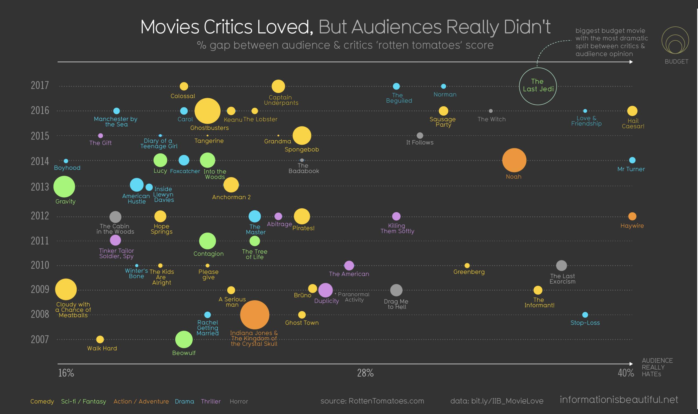

Homework #1 - Vis in the Wild
Dhaval Patodiya - dpatodiy@asu.edu

Critics and Audience Movie Reviews
Summary: This visualization shows the difference between the movies reviewed by critics and audience in a scatter plot graph. The dataset is used obtained from RottenTomatoes. The data consists of 92 movies.
Y-axis represents the year of the movies released. X-axis represents the percentage gap between the critics review and audience review (Audience hates) and 3rd axis is the budget of the movie. The movies are represented as cricle and area of circle indicates the budget of the movie.
Different colors are used to show the different genere of the movies.
- Domain: The target users of the graph are the general audience and movie enthusiast of the movies.
- Data:
- Domain description: The reviews of users and critics for movies (from RottenTomatoes)
- Abstraction:
- Dataset Type: Tabular
- Attribute: Rotten Tomatoes critics %
- Type: Ordered (Quantitative)
- Cardinality: 41 (ratings can vary from 59-99)
- Attribute: Rotten Tomatoes Audience %
- Type: Ordered (Quantitative)
- Cardinality: 38 (ratings can vary from 42-80)
- Attribute: % gap_dervied (difference bewtween critics and audience ratings)
- Type: Ordered (Quantitative)
- Cardinality: 30 (difference in ratings can vary from 16-45)
- Attribute: Year
- Type: Ordered (Quantitative)
- Cardinality: 11 (2007 -2017)
- Attribute: Genre
- Type: Caregorical
- Cardinality: 6 values
- Attribute: Budget
- Type: Ordered (Quantitative)
- Cardinality: 301 (budget ranges from 0-300)
- Attribute: Movie Name
- Type: Categorical
- Cardinality: 92 values
- Task:
- Domain description: Finding movies which was hated by audience but loved by critics and had high budget in a specific genre
- Abstraction (Optional):
- Attribute: Genre
- Categorical : "Movies having comedy genre"
- Attribute: Budget
- Ordered : "budget of movies hated by user"
- Attribute: Gap
- Ordered : "Movies hated or liked either by audience, critics, or both"
- Some Other tasks:
- Find movies having less difference between the reviews of critics and users
- Movies highly rate by critics, audience and etc.
- Idiom:
- Circles : Movies
- Circle area : Budget
- Color of circle : Genere
- Vertical position : Year made
- Horizontal position : How much Audience hates the movie
Personal Thoughts: The visualization looks neat and clean for the given dataset. Colors don't overlap with each others and movies and it gives a nice representation of the data.
The area of the circle shows the budget which is properly scaled down which doesn't other circles. But the this visualization won't work if the datasets is increased and more fields are added.
If the user were able to interact with the visualization then it would be more effective.